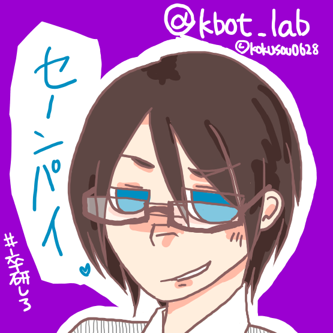

卒研してる情報系な学生の毒舌な後輩botの取扱説明書

お知らせ
運用再開しました。少しつぶやく内容が増えました。(2013.9.30)
Q. きみだれ?
卒研してる先輩をからかうのが好きな後輩です。
時々変なこと言ったり不定期につぶやいたりしますが、気にしないでくださいね。 /* 中の人がデバッグしてます */
Q. なにができるの?
- 2時間おきに毒舌を吐きます。先輩も定期的に成果の確認した方がいいんじゃないですか？
- 特定のイベントに対してmentionを送ってカウントダウンを行います。
- [@hnmx4]先輩に[卒業研究中間発表]までの残り日数を[16進数で]お知らせ中
気が向いたらmentionに反応します。特定の言葉に反応するかもしれませんよ。
Q. 殴っていい?
先輩、暴力反対です。ジョークなので怒らないでくださいね。
Q. ちょっと言ってほしいことが…
…先輩、Mなんですか？
僕に呟いてほしい内容があったらDMで教えて下さいね。気が向いたら先輩に言うようになります。
Q. ソースコードは公開してる？
GitHubで公開しています。先輩もソースコードの管理はしっかりしてくださいね！
haneuma0628/kbot_lab